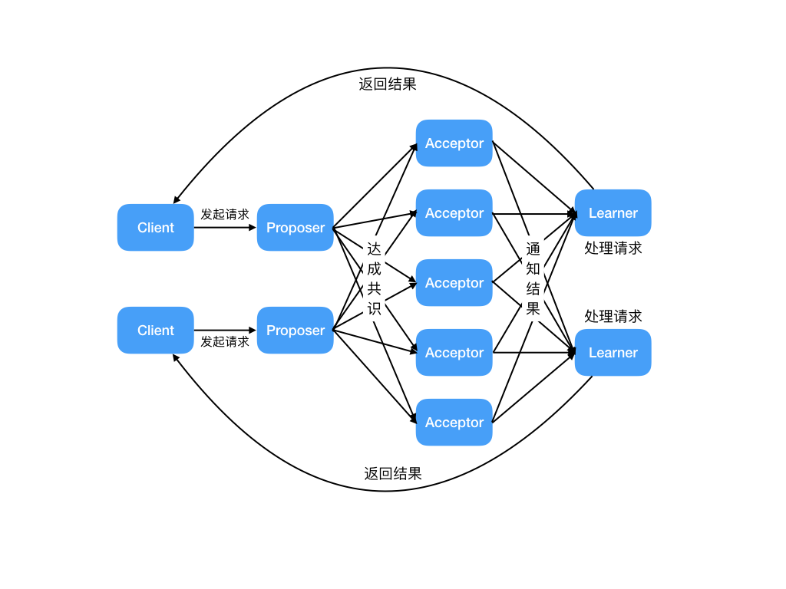

摘要：用于解决分库分表带来的问题。本质上，目的就是为了保证（分布式系统中）不同数据库的数据一致性。CAP 定理和 BASE 理论，Paxos 算法和 Raft 算法。
[TOC]
见 MySQL 文档中。
见 Spring 文档中。
当本地事务要扩展到分布式时，它的复杂性进一步增加了。
本地事务的情况下，所有数据都会落到同一个DB中，但是在分布式的情况下，就会出现数据可能要落到多个DB，或者还会落到Redis，落到MQ等中。
本地事务的情况下，通常所有事务相关的业务操作，会被封装到一个Service方法中。

基于上述两个复杂性，期望有一个统一的分布式事务方案，能够像本地事务一样，以几乎无侵入的方式，满足各种存储介质、各种复杂链路，是不现实的。
至少，在当前，还没有一个十分成熟的解决方案。
分布式事务：指事务的参与者、支持事务的服务器、资源服务器、事务管理器分别位于不同的分布式系统的不同节点上。
举个例子：在电商网站中，用户对商品进行下单，需要在订单表中创建一条订单数据，同时需要在库存表中修改当前商品的剩余库存数量。
（分布式）数据不一致问题：生产者一定发出去了消息，或者消费者一定消费了消息。如
订单系统创建完订单后，再发送消息给下游系统。
如果订单创建成功，但是消息没有成功发送出去，下游系统就无法感知这个事情，导致数据不一致。
分布式一致性问题：分布式场景下，一个流程同时包含多个服务时，
分布式一致性的根本原因在于：数据的分布式操作引起的，本地事务无法保障数据的原子性。
分布式一致性问题的解决思路有两种：
典型的分布式事务场景有：
跨库事务指的是，一个应用某个服务（功能）需要同时操作多个数据库，不同的库中存储不同的业务数据。

通常一个库数据量比较大或者预期未来的数据量比较大，都会进行水平拆分，也就是分库分表。
如下图，将数据库B拆分成了2个库：

对于分库分表的情况，一般开发人员都会使用一些数据库中间件来降低sql操作的复杂性。
如，对于sql：insert into user(id,name) values (1,"tianshouzhi"),(2,"wangxiaoxiao")。
这条sql是操作单库的语法，单库情况下，可以保证事务的一致性。
但是由于现在进行了分库分表，希望将1号记录插入分库1，2号记录插入分库2。所以数据库中间件要将其改写为2条sql，分别插入两个不同的分库。
微服务架构下，
下图演示了一个3个服务之间彼此调用的架构：

分布式系统的最大难点，就是各个节点的状态如何同步。CAP 定理是这方面的基本定理，也是理解分布式系统的起点。
CAP 是分布式系统设计基本定理，BASE 是 CAP 理论中 AP 方案的延伸。
另外，ACID 是数据库事务完整性的理论。
CAP 定理：对于一个分布式系统来说，当设计读写操作时，只能同时满足CAP中的两个。
Consistency（一致性）：数据在多个副本之间能够保持一致。所有节点访问同一份最新的数据副本。Availability（可用性）：每次请求（非故障的节点）在合理的时间内返回非错（不是错误或超时）的响应。Partition Tolerance（分区容错性）：分布式系统出现网络分区故障时，仍能对外提供（满足一致性和可用性的）服务，除非整个网络环境都发生了故障。
网络分区：分布式系统中，因故障（某些网络节点间不再连通），整个网络分成几块孤立区域。
Consistency）和可用性（Availability）只能 2 选 1、只能满足其中一个。如，某个节点在进行写操作：
ZooKeeper、HBase），用于需确保强一致性的场景，如银行。
ZooKeeper 注册中心的读请求都能得到一致性的结果，但不保证每次请求的可用性，如在 Leader 选举过程中或半数以上的机器不可用时，服务就是不可用的。Cassandra、Eureka尤瑞卡）。
Eureka 注册中心中不存在 Leader 节点，每个节点都是一样的、平等的。保证即使大部分节点挂掉也不会影响正常提供服务，只要有一个节点可用就行，不过这个节点上的数据可能并不是最新的（不保证一致性 C）。注意：
Nacos 同时支持 CP 和 AP 架构 。BASE 核心思想：即使无法做到强一致性，但每个应用都可根据自身业务特点，采用适当的方式来使系统达到最终一致性 E。
Consistency）来满足系统的可用性（Availability），系统中一部分数据不可用或不一致时，仍需保持系统整体“主要可用”。BASE：
Basically Available（BA 基本可用） ：指分布式系统在出现不可预知故障时，允许损失部分可用性。
Soft-state（S 软状态） ：允许系统中的数据存在中间状态（CAP 理论中的数据不一致），且不会影响系统的整体可用性，即允许系统在不同节点的数据副本间进行数据同步的过程存在延时。Eventually Consistent（E 最终一致性）：强调的是系统中所有的数据副本、在经过一段时间的同步后，最终能达到一致的状态。本质是保证最终数据能达到一致，而不需实时保证。最终一致性的具体方式是：
关系：
BASE理论是对CAP中 一致性（Consistency）和可用性（Availability）权衡的结果，其来源于对大规模互联网系统分布式实践的总结， 是基于CAP定理逐步演化而来的。
BASE理论其实就是对CAP理论的延伸和补充，主要是对AP的补充。牺牲数据的强一致性，来保证数据的可用性，虽然存在中间装填，但数据最终一致。
区别：
联系：ACID 和 BASE 代表了两种截然相反的设计哲学，在分布式系统设计的场景中，系统组件对一致性要求是不同的，因此 ACID 和 BASE 又会结合使用。
分布式算法。
Paxos 算法：基于消息传递 且具有 高效容错特性 的一致性算法，目前公认的解决 分布式一致性问题 最有效的经典算法之一。
但非常难理解和实现。不是一致性算法、而是共识算法。
描述的是多节点间如何就某个值（提案 Value）达成共识。
Paxos 算法存在 3 个重要的角色：

缺点：假如有多个提议者互不相让，那么就可能导致整个提议的过程进入了死循环。
因此，引入了 Multi Paxos 的算法思想。
Multi-Paxos 思想： 在多个提议者的情况下，选出一个Leader（领导者），由领导者作为唯一的提议者，这样就可以解决提议者冲突的问题。核心是通过多个 Basic Paxos 实例，就一系列值达成共识。
针对没有恶意节点的情况，Raft 算法、ZAB 协议、 Fast Paxos 算法都是基于 Paxos 算法改进而来；
针对存在恶意节点的情况，一般用工作量证明（POW，Proof-of-Work）、权益证明（PoS，Proof-of-Stake ）等共识算法。
共识是可容错系统中的一个基本问题：即使面对故障，服务器也可在共享状态上达成一致。
Server的状态机计算相同状态的副本，即使有一部分的Server宕机了仍能继续运行。Raft 是一个 易于理解的一致性算法。过程如同选举一样，参选者 需要说服 大多数选民 (Server) 投票给他，一旦选定后就跟随其操作。
Paxos 目标相同，都是为了实现 一致性 产生的。Paxos 和 Raft 的区别在于选举的 具体过程 不同。Raft 协议将 Server 进程分为三种角色：
Leader（领导者）：领导者由跟随者投票选出。Follower（跟随者）：刚开始没有 领导者，所有集群中的 参与者 都是 跟随者。Candidate（候选人）Raft算法的工作流程：
应用：
参考：Raft 算法解读
分布式事务实现方案必须要考虑性能的问题：
分布式事务实现方案，从类型上去分为：


Seata 是一款开源的分布式事务解决方案，致力于提供高性能和简单易用的分布式事务服务。
https://blog.csdn.net/a745233700/article/details/122402303
分布式事务（CAP）：https://www.cnblogs.com/crazymakercircle/p/13917517.html#autoid-h2-8-2-0
详细方案及示意图参考：分布式八股文（背诵版）
刚性事务：指的是，要使分布式事务，达到像本地事务一样，具备数据强一致性。
全局事务模型 DTP（Data Tools Platform）
缺点：由于同步阻塞，处理效率低，不适合大型网站分布式场景。
2PC 的一种改进版本 ，为解决两阶段提交协议的单点故障和同步阻塞问题。有三个阶段：CanCommit，PreCommit，DoCommit。X/Open DTP（Distributed Transaction Process）模型：是一个分布式事务模型。
在 X/Open DTP 模型里面，有三个角色：
Application，应用程序）：也就是业务层。哪些操作属于一个事务，就是AP定义的。Transaction Manager，事务管理器）：接收AP的事务请求，对全局事务进行管理，管理事务分支状态，协调RM的处理，通知RM哪些操作属于哪些全局事务以及事务分支等等。
Resource Manager，资源管理器）：一般是数据库，也可以是其他的，如消息队列（如JMS 数据源）、文件系统等。
AP自己操作TM，当需要事务时，AP向TM请求发起事务，TM负责整个事务的提交，回滚等。
XA之所以需要引入事务管理器是因为：在分布式系统中，从理论上讲，两台机器理论上无法达到一致的状态，需要引入一个单点进行协调。
用非常官方的话来说:
Distributed Transaction Processing）标准。XA是数据库的分布式事务，强一致性，在整个过程中，数据一直处于锁住状态。
以下的函数使事务管理器可以对资源管理器进行的操作： 1）xa_open,xa_close：建立和关闭与资源管理器的连接。 2）xa_start,xa_end：开始和结束一个本地事务。 3）xa_prepare,xa_commit,xa_rollback：预提交、提交和回滚一个本地事务。 4）xa_recover：回滚一个已进行预提交的事务。 5）ax_开头的函数：使资源管理器可以动态地在事务管理器中进行注册，并可以对XID(TRANSACTION IDS)进行操作。 6）ax_reg,ax_unreg；允许一个资源管理器在一个TMS(TRANSACTION MANAGER SERVER)中动态注册或撤消注册。

两阶段提交（2PC）协议：是XA规范定义的 数据一致性协议。
三阶段提交（3PC）协议：对 2PC协议的一种扩展。
Seata 是一款开源的分布式事务解决方案，致力于在微服务架构下提供高性能和简单易用的分布式事务服务。提供了 AT、TCC、SAGA 和 XA 事务模式。
Seata AT 模式是增强型2pc模式。
AT 模式： 两阶段提交协议的演变，没有一直锁表
作为java平台上事务规范 JTA（Java Transaction API）也定义了对XA事务的支持。
实际上，JTA是基于XA架构上建模的。
在JTA 中，事务管理器抽象为javax.transaction.TransactionManager接口，并通过底层事务服务（即 JTS）实现。
像很多其他的java规范一样，JTA仅仅定义了接口，具体的实现则是由供应商(如J2EE厂商)负责提供，目前JTA的实现主要由以下几种：
这些实现可以应用在那些不使用J2EE应用服务器的环境里用以提供分布事事务保证。如Tomcat、Jetty以及普通的java应用。
事务是编程中必不可少的一项内容，基于此，为了规范事务开发，Java增加了关于事务的规范，即JTA和JTS
JTA定义了一套接口，其中约定了几种主要的角色：TransactionManager、UserTransaction、Transaction、XAResource，并定义了这些角色之间需要遵守的规范，如Transaction的委托给TransactionManager等。
JTS也是一组规范，上面提到JTA中需要角色之间的交互，那应该如何交互？JTS就是约定了交互细节的规范。
总体上来说JTA更多的是从框架的角度来约定程序角色的接口，而JTS则是从具体实现的角度来约定程序角色之间的接口，两者各司其职。
Atomikos公司旗下有两款著名的分布事务产品：
这两个产品的关系如下图所示：

可以看到，在开源版本中支持JTA/XA、JDBC、JMS的事务。
atomikos也支持与spring事务整合。
spring事务管理器的顶级抽象是PlatformTransactionManager接口，其提供了个重要的实现类：
显然，在这里需要配置的是JTATransactionManager。
public class JTAService {
@Autowired
private UserMapper userMapper;//操作db_user库
@Autowired
private AccountMapper accountMapper;//操作db_account库
@Transactional
public void insert() {
User user = new User();
user.setName("wangxiaoxiao");
userMapper.insert(user);
//模拟异常，spring回滚后，db_user库中user表中也不会插入记录
Account account = new Account();
account.setUserId(user.getId());
account.setMoney(123456789);
accountMapper.insert(account);
}
}
TX-LCN定位于一款事务协调性框架，框架其本身并不生产事务，而是本地事务的协调者，从而达到事务一致性的效果。
TX-LCN 主要有两个模块，Tx-Client(TC) ，Tx-Manager™.
但是XA规范在1994年就出现了，至今没有大规模流行起来，必然有他一定的缺陷：
XA协议比较简单，而且一旦商业数据库实现了XA协议，使用分布式事务的成本也比较低。
其实也并非不用，例如在IBM大型机上基于CICS很多跨资源是基于XA协议实现的分布式事务，事实上XA也算分布式事务处理的规范了，但在为什么互联网中很少使用，究其原因有以下几个：
准确讲XA是一个规范、协议，它只是定义了一系列的接口，只是目前大多数实现XA的都是数据库或者MQ，所以提起XA往往多指基于资源层的底层分布式事务解决方案。其实现在也有些数据分片框架或者中间件也支持XA协议，毕竟它的兼容性、普遍性更好。
2PC即Two-Phase Commit，二阶段提交。
2pc解决的是分布式数据强一致性问题：
顾名思义，两阶段提交在处理分布式事务时分为两个阶段：voting（投票阶段，有的地方会叫做prepare阶段）和commit阶段。
2pc中存在两个角色，事务协调者（seata、atomikos、lcn）和事务参与者，事务参与者通常是指应用的数据库。

广泛应用在数据库领域，为了使得基于分布式架构的所有节点可以在进行事务处理时能够保持原子性和一致性。
顾名思义，2PC分为两个阶段处理：


特点：适合单体应用
2PC 方案中，有一个事务管理器的角色，负责协调多个数据库（资源管理器）的事务。

2PC 方案比较适合单体应用里，跨多个库的分布式事务，而且因为严重依赖于数据库层面来搞定复杂的事务，效率很低，绝对不适合高并发的场景。
2PC 方案实际很少用，一般来说某个系统内部如果出现跨多个库的这么一个操作，是不合规的。
如果要操作别的服务对应的库，不允许直连别的服务的库，违反微服务架构的规范。
如果要操作别人的服务的库，必须是通过调用别的服务的接口来实现，绝对不允许交叉访问别人的数据库。
2PC具有明显的优缺点：
优点主要体现在实现原理简单；
XA-两阶段提交协议中会遇到的一些问题
缺点比较多：
实际上分布式事务是一件非常复杂的事情，两阶段提交只是通过增加了事务协调者（Coordinator）的角色来通过2个阶段的处理流程来解决分布式系统中一个事务需要跨多个服务节点的数据一致性问题。但是从异常情况上考虑，这个流程也并不是那么的无懈可击。
假设如果在第二个阶段中Coordinator在接收到Partcipant的”Vote_Request”后挂掉了或者网络出现了异常，那么此时Partcipant节点就会一直处于本地事务挂起的状态，从而长时间地占用资源。当然这种情况只会出现在极端情况下，然而作为一套健壮的软件系统而言，异常Case的处理才是真正考验方案正确性的地方。
针对2PC的缺点，研究者提出了3PC，即Three-Phase Commit。
作为2PC的改进版，3PC将原有的两阶段过程，重新划分为CanCommit、PreCommit、do Commit三个阶段。

在本阶段，协调者会根据上一阶段的反馈情况来决定是否可以执行事务的PreCommit操作。有以下两种可能：
加入任意一个参与者向协调者发送No响应，或者等待超时，协调者在没有得到所有参与者响应时，即可以中断事务：
在这个阶段，会真正的进行事务提交，同样存在两种可能。
在该阶段，假设正常状态的协调者接收到任一个参与者发送的No响应，或在超时时间内，仍旧没收到反馈消息，就会中断事务：
优点：3PC有效降低了2PC带来的参与者阻塞范围，并且能够在出现单点故障后继续达成一致；
缺点：但3PC带来了新的问题，在参与者收到preCommit消息后，如果网络出现分区，协调者和参与者无法进行后续的通信。这种情况下，参与者在等待超时后，依旧会执行事务提交，这样会导致数据的不一致。
三阶段提交协议在协调者和参与者中都引入 超时机制，并且把两阶段提交协议的第一个阶段拆分成了两步：询问，然后再锁资源，最后真正提交。
三阶段提交的三个阶段分别为：can_commit，pre_commit，do_commit。

相对于2PC，3PC主要解决的单点故障问题，并减少阻塞。
但是这种机制也会导致数据一致性问题，因为，由于网络原因，协调者发送的abort响应没有及时被参与者接收到，那么参与者在等待超时之后执行了commit操作。这样就和其他接到abort命令并执行回滚的参与者之间存在数据不一致的情况。
相比较2PC而言，3PC对于协调者（Coordinator）和参与者（Partcipant）都设置了超时时间，而2PC只有协调者才拥有超时机制。这解决了一个什么问题呢？
这个优化点，主要是避免了参与者在长时间无法与协调者节点通讯（协调者挂掉了）的情况下，无法释放资源的问题，因为参与者自身拥有超时机制会在超时后，自动进行本地commit从而进行释放资源。而这种机制也侧面降低了整个事务的阻塞时间和范围。
另外，通过CanCommit、PreCommit、DoCommit三个阶段的设计，相较于2PC而言，多设置了一个缓冲阶段保证了在最后提交阶段之前各参与节点的状态是一致的。
以上就是3PC相对于2PC的一个提高（相对缓解了2PC中的前两个问题），但是3PC依然没有完全解决数据不一致的问题。
在电商领域等互联网场景下，刚性事务在数据库性能和处理能力上都暴露出了瓶颈。
柔性事务有两个特性：基本可用和柔性状态。
- 基本可用：是指分布式系统出现故障时允许损失一部分的可用性。
- 柔性状态：是指允许系统存在中间状态，这个中间状态不会影响系统整体的可用性，比如数据库读写分离的主从同步延迟等。柔性事务的一致性指的是最终一致性。
柔性事务：指的是不要求强一致性，而是要求最终一致性，允许有中间状态。
也就是Base理论，换句话说，就是AP状态。
特点为：有业务改造，最终一致性，实现补偿接口，实现资源锁定接口，高并发，适合长事务。
柔性事务主要分为：补偿型事务都是同步的，通知型事务都是异步的。
通知型事务的主流实现是通过MQ（消息队列）来通知其他事务参与者自己事务的执行状态，引入MQ组件，有效的将事务参与者进行解耦，各参与者都可以异步执行，所以通知型事务又被称为异步事务。
通知型事务主要适用于那些需要异步更新数据，并且对数据的实时性要求较低的场景，主要包含：

最大努力通知事务，其实是基于异步确保型事务发展而来适用于外部对接的一种业务实现。他们主要有的是业务差别，如下：
二者的共性：
1、 事务消息都依赖MQ进行事务通知，所以都是异步的。 2、 事务消息在投递方都是存在重复投递的可能，需要有配套的机制去降低重复投递率，实现更友好的消息投递去重。 3、 事务消息的消费方，因为投递重复的无法避免，因此需要进行消费去重设计或者服务幂等设计。
二者的区别：
MQ事务消息：
DB本地消息表：

基于MQ的事务消息方案主要依靠MQ的半消息机制来实现投递消息和参与者自身本地事务的一致性保障。
半消息：在原有队列消息执行后的逻辑，如果后面的本地逻辑出错，则不发送该消息，如果通过则告知MQ发送；
流程

举个例子，假设存在业务规则：某笔订单成功后，为用户加一定的积分。
在这条规则里，管理订单数据源的服务为事务发起方，管理积分数据源的服务为事务跟随者。
从这个过程可以看到，基于消息队列实现的事务存在以下操作：

可以看到它的整体流程是比较简单的，同时业务开发工作量也不大：
可以看到该事务形态过程简单，性能消耗小，发起方与跟随方之间的流量峰谷可以使用队列填平，同时业务开发工作量也基本与单机事务没有差别，都不需要编写反向的业务逻辑过程.
有一些第三方的MQ是支持事务消息的，这些消息队列，支持半消息机制，比如RocketMQ，ActiveMQ。
- 但是有一些常用的MQ也不支持事务消息，比如 RabbitMQ 和 Kafka 都不支持。
以阿里的 RocketMQ 中间件为例实现 MQ 异步确保型事务，其思路大致为：
RMQ_SYS_TRANS_HALF_TOPIC，queueId也是固定为0。broker端半消息存储成功并返回后，A系统执行本地事务，并根据本地事务的执行结果来决定半消息的提交状态为提交或者回滚。
A系统发送结束半消息的请求，并带上提交状态（提交 or 回滚）。
RMQ_SYS_TRANS_HALF_TOPIC的queue中查出该消息，设置为完成状态。
RMQ_SYS_TRANS_HALF_TOPIC队列中复制到这个消息原始topic的queue中去（之后这条消息就能被正常消费了）；TransactionalMessageCheckService 任务，该任务会定时从半消息队列中读出所有超时未完成的半消息，针对每条未完成的消息，Broker会给对应的Producer发送一个消息反查请求，根据反查结果来决定这个半消息是需要提交还是回滚，或者后面继续来反查。
在rocketMq中，不论是producer收到broker存储半消息成功返回后执行本地事务，还是broker向producer反查消息状态，都是通过回调机制完成，把producer端的代码贴出来你就明白了：

半消息发送时，会传入一个回调类TransactionListener，使用时必须实现其中的两个方法，
executeLocalTransaction 方法会在broker返回半消息存储成功后执行，我们会在其中执行本地事务；checkLocalTransaction方法会在broker向producer发起反查时执行，我们会在其中查询库表状态。两个方法的返回值都是消息状态，就是告诉broker应该提交或者回滚半消息。

有时候目前的MQ组件并不支持事务消息，或者想尽量少的侵入业务方。这时需要另外一种方案“基于DB本地消息表“。
本地消息表最初由eBay 提出来解决分布式事务的问题。是目前业界使用的比较多的方案之一，核心思想就是将分布式事务拆分成本地事务进行处理。

发送消息方：
消息消费方：
生产方和消费方定时扫描本地消息表，把还没处理完成的消息或者失败的消息再发送一遍。如果有靠谱的自动对账补账逻辑，这种方案还是非常实用的。
优点：
缺点：
最大努力通知型的最终一致性：
本质是通过引入定期校验机制实现最终一致性，对业务的侵入性较低，适合于对最终一致性敏感度比较低、业务链路较短的场景。
因为核心要点一致，都是为了保证消息的一致性投递，所以，最大努力通知事务在投递流程上跟异步确保型是一样的，因此也有两个分支：
要实现最大努力通知，可以采用 MQ 的 ACK 机制。
最大努力通知事务在投递之前，跟异步确保型流程都差不多，关键在于投递后的处理。
因为异步确保型在于内部的事务处理，所以MQ和系统是直连并且无需严格的权限、安全等方面的思路设计。最大努力通知事务在于第三方系统的对接，所以最大努力通知事务有几个特性：

特点：
要实现最大努力通知，可以采用 定期检查本地消息表的机制 。

发送消息方：
最大努力通知事务在于第三方系统的对接，所以最大努力通知事务有几个特性：
通知型事务，是无法解决本地事务执行和消息发送的一致性问题的。
所以，通知型事务的难度在于： 投递消息和参与者本地事务的一致性保障。
消息中间件在分布式系统中的核心作用就是：异步通讯、应用解耦和并发缓冲（也叫作流量削峰）。
消息发送一致性是指产生消息的业务动作与消息发送动作一致：也就是说如果业务操作成功，那么由这个业务操作所产生的消息一定要发送出去，否则就丢失。
常规MQ消息处理流程和特点：

常规的MQ队列处理流程无法实现消息的一致性。所以，需要借助半消息、本地消息表，保障一致性。

对于未确认的消息，采用按规则重新投递的方式进行处理。
对于以上流程，消息重复发送会导致业务处理接口出现重复调用的问题。
但是基于消息实现的事务并不能解决所有的业务场景，例如以下场景：某笔订单完成时，同时扣掉用户的现金。
这里事务发起方是管理订单库的服务，但对整个事务是否提交并不能只由订单服务决定，因为还要确保用户有足够的钱，才能完成这笔交易，而这个信息在管理现金的服务里。这里可以引入基于补偿实现的事务，其流程如下：
以上这个是正常成功的流程，异常流程需要回滚的话，将额外发送远程调用到现金服务以加上之前扣掉的金额。
以上流程比基于消息队列实现的事务的流程要复杂，同时开发的工作量也更多：
可以看到，该事务流程相对于基于消息实现的分布式事务更为复杂，需要额外开发相关的业务回滚方法，也失去了服务间流量削峰填谷的功能。
补偿模式：使用一个额外的协调服务来协调各个需要保证一致性的业务服务，协调服务按顺序调用各个业务微服务，如果某个业务服务调用异常（包括业务异常和技术异常）就取消之前所有已经调用成功的业务服务。
补偿模式大致有TCC，和Saga两种细分的方案。
TCC（Try Confirm Cancel）模式、补偿事务：是 2PC 两阶段提交的一个变种。针对每个操作，都需要有一个其对应的确认和取消操作（当操作成功时调用确认操作，当操作失败时调用取消操作）。
TCC 分布式事务模型包括三部分：
主业务服务：是整个业务活动的发起方，服务的编排者，负责发起并完成整个业务活动。
TCC 分布式事务模型相对于 XA 等传统模型，其特征在于：
TCC 模型认为对于业务系统中一个特定的业务逻辑，其对外提供服务时，必须接受一些不确定性，即对业务逻辑初步操作的调用仅是一个临时性操作，调用它的主业务服务保留了后续的取消权。
因此，针对一个具体的业务服务，TCC 分布式事务模型需要业务系统提供三段业务逻辑：
Try 阶段失败可以 Cancel，如果 Confirm 和 Cancel 阶段失败了怎么办？

TCC 分布式事务模型包括三部分：

然而基于补偿的事务形态也并非能实现所有的需求，如以下场景：某笔订单完成时，同时扣掉用户的现金，但交易未完成，也未被取消时，不能让客户看到钱变少了。
这时可以引入TCC，其流程如下：
以上是正常完成的流程，若为异常流程，则需要发送远程调用请求到现金服务，撤销冻结的金额。
以上流程比基于补偿实现的事务的流程要复杂，同时开发的工作量也更多：
TCC实际上是最为复杂的一种情况，其能处理所有的业务场景，但无论出于性能上的考虑，还是开发复杂度上的考虑，都应该尽量避免该类事务。
DTP模型，全称 X/Open Distributed Transaction Processing Reference Model，是一个由X/Open组织（现称为The Open Group）定义的分布式事务处理规范。
在DTP模型中，有三个核心角色：
DTP模型的执行流程大致如下：
DTP模型通过XA规范定义了TM和RM之间的接口，XA接口是双向的系统接口，在事务管理器和资源管理器之间形成通信桥梁。XA规范主要定义了全局事务管理器和局部资源管理器之间的接口，使得多个资源（如数据库、应用服务器、消息队列等）可以在一个事务中处理，同时跨应用满足ACID属性。
DTP模型的优点在于它提供了一种标准化的方式来处理分布式事务，但同时也存在一些局限性，比如性能问题。由于DTP模型通常采用基于锁的并发控制来保证事务的隔离性，这意味着资源将被锁定直至事务结束，这可能会严重影响系统的并发性能。此外，DTP模型主要适用于单服务、跨资源场景，对于跨服务、跨资源的分布式事务处理可能不够有效。
TCC事务模型（Try-Confirm-Cancel）是一种分布式事务解决方案，它通过将事务的执行过程分为三个阶段来实现分布式事务的原子性和一致性。这种模型不依赖于底层资源管理器（如数据库）对分布式事务的支持，而是通过对业务逻辑的分解来实现分布式事务。以下是TCC事务模型的三个核心阶段：
TCC模型的优势在于它提供了一种灵活的事务管理方式，允许业务系统根据具体业务逻辑来实现Try、Confirm和Cancel三个阶段的操作。这使得TCC模型能够适应复杂的业务场景，并且可以通过减少资源锁定的时间来提高系统的并发性能。
然而，TCC模型的缺点在于它对业务代码的侵入性较强，需要业务系统开发者实现Try、Confirm和Cancel三个接口，这增加了开发的复杂度和维护成本。此外，为了保证事务的最终一致性，开发者需要确保Confirm和Cancel操作的幂等性，这可能需要额外的设计和实现工作。
在实际应用中，TCC模型适用于那些对性能要求较高、业务逻辑复杂且需要细粒度控制事务的场景。例如，在互联网金融、电子商务等领域，TCC模型可以帮助实现跨服务、跨数据库的事务一致性
比较一下TCC事务模型和DTP事务模型，如下所示：

这两张图看起来差别较大，实际上很多地方是类似的!
1、TCC模型中的 主业务服务 相当于 DTP模型中的AP，TCC模型中的从业务服务 相当于 DTP模型中的RM
2、TCC模型中，从业务服务提供的try、confirm、cancel接口 相当于 DTP模型中RM提供的prepare、commit、rollback接口
3、事务管理器
TCC与XA两阶段提交有着异曲同工之妙：

TCC它会弱化每个步骤中对于资源的锁定，以达到一个能承受高并发的目的（基于最终一致性）。
具体的说明如下：
XA是资源层面的分布式事务，强一致性，在两阶段提交的整个过程中，一直会持有资源的锁。
XA事务中的两阶段提交内部过程是对开发者屏蔽的，开发者从代码层面是感知不到这个过程的。而事务管理器在两阶段提交过程中，从prepare到commit/rollback过程中，资源实际上一直都是被加锁的。如果有其他人需要更新这两条记录，那么就必须等待锁释放。
TCC是业务层面的分布式事务，最终一致性，不会一直持有资源的锁。
TCC中的两阶段提交并没有对开发者完全屏蔽，也就是说从代码层面，开发者是可以感受到两阶段提交的存在。try、confirm/cancel在执行过程中，一般都会开启各自的本地事务，来保证方法内部业务逻辑的ACID特性。其中：
1、try过程的本地事务，是保证资源预留的业务逻辑的正确性。
2、confirm/cancel执行的本地事务逻辑确认/取消预留资源，以保证最终一致性，也就是所谓的补偿型事务(Compensation-Based Transactions)。由于是多个独立的本地事务，因此不会对资源一直加锁。
另外，这里提到confirm/cancel执行的本地事务是 补偿性事务：
补偿是一个独立的支持ACID特性的本地事务，用于在逻辑上取消服务提供者上一个ACID事务造成的影响，对于一个长事务(long-running transaction)，与其实现一个巨大的分布式ACID事务，不如使用基于补偿性的方案，把每一次服务调用当做一个较短的本地ACID事务来处理，执行完就立即提交
TCC是可以解决部分场景下的分布式事务的，但是，它的一个问题在于，需要每个参与者都分别实现Try，Confirm和Cancel接口及逻辑，这对于业务的侵入性是巨大的。
TCC 方案严重依赖回滚和补偿代码，最终的结果是：回滚代码逻辑复杂，业务代码很难维护。所以，TCC 方案的使用场景较少，但是也有使用的场景。
比如说跟钱打交道的，支付、交易相关的场景，大家会用 TCC方案，严格保证分布式事务要么全部成功，要么全部自动回滚，严格保证资金的正确性，保证在资金上不会出现问题。

SAGA可以看做一个异步的、利用队列实现的补偿事务。
Saga是一个长活事务可被分解成可以交错运行的子事务集合。
Saga模型是把一个分布式事务拆分为多个本地事务，每个本地事务都有相应的执行模块和补偿模块（对应TCC中的Confirm和Cancel），当Saga事务中任意一个本地事务出错时，可以通过调用相关的补偿方法恢复之前的事务，达到事务最终一致性。
这样的SAGA事务模型，是牺牲了一定的隔离性和一致性的，但是提高了long-running事务的可用性。
Saga 模型由三部分组成：
执行顺序有两种：
Saga 两种恢复策略：

显然，向前恢复没有必要提供补偿事务，如果你的业务中，子事务（最终）总会成功，或补偿事务难以定义或不可能，向前恢复更符合你的需求。
理论上补偿事务永不失败，然而，在分布式世界中，服务器可能会宕机，网络可能会失败，甚至数据中心也可能会停电。在这种情况下我们能做些什么？ 最后的手段是提供回退措施，比如人工干预。
Saga看起来很有希望满足我们的需求。所有长活事务都可以这样做吗？这里有一些限制：
补偿也有需考虑的事项：
但这对我们的业务来说不是问题。其实难以撤消的行为也有可能被补偿。例如，发送电邮的事务可以通过发送解释问题的另一封电邮来补偿。
Saga对于ACID的保证和TCC一样：
Saga不提供ACID保证，因为原子性和隔离性不能得到满足。
SAGA模型的核心思想是，通过某种方案，将分布式事务转化为本地事务，从而降低问题的复杂性。
比如以DB和MQ的场景为例，业务逻辑如下：
由于上述逻辑中，对应了两种存储端，即DB和MQ，所以，简单的通过本地事务是无法解决的。那么，依照SAGA模型，可以有两种解决方案。
RocketMQ新版本中，就支持了这种模式。
首先，我们理解什么是半消息。简单来说，就是在消息上加了一个状态。当发送者第一次将消息放入MQ后，该消息为待确认状态。该状态下，该消息是不能被消费者消费的。发送者必须二次和MQ进行交互，将消息从待确认状态变更为确认状态后，消息才能被消费者消费。待确认状态的消息，就称之为半消息。
半消息的完整事务逻辑如下：
我们发现，通过半消息的形式，将DB的操作夹在了两个MQ操作的中间。假设，第2步失败了，那么，MQ中的消息就会一直是半消息状态，也就不会被消费者消费。
那么，半消息就一直存在于MQ中吗？或者是说如果第3步失败了呢？
为了解决上面的问题，MQ引入了一个扫描的机制。即MQ会每隔一段时间，对所有的半消息进行扫描，并就扫描到的存在时间过长的半消息，向发送者进行询问，询问如果得到确认回复，则将消息改为确认状态，如得到失败回复，则将消息删除。
 半消息如上，半消息机制的一个问题是：要求业务方提供查询消息状态接口，对业务方依然有较大的侵入性。
半消息如上，半消息机制的一个问题是：要求业务方提供查询消息状态接口，对业务方依然有较大的侵入性。
在DB中，新增一个消息表，用于存放消息。如下：

本地消息表如上，通过上述逻辑，将一个分布式的事务，拆分成两大步。第1和第2，构成了一个本地的事务，从而解决了分布式事务的问题。
这种解决方案，不需要业务端提供消息查询接口，只需要稍微修改业务逻辑，侵入性是最小的。
SAGA适用于无需马上返回业务发起方最终状态的场景，例如：你的请求已提交，请稍后查询或留意通知 之类。
将上述补偿事务的场景用SAGA改写，其流程如下：
以上为成功的流程，若现金服务扣除金额失败，那么，最后一步订单服务将会更新订单状态为失败。
其业务编码工作量比补偿事务多一点，包括以下内容：
但其相对于补偿事务形态有性能上的优势，所有的本地子事务执行过程中，都无需等待其调用的子事务执行，减少了加锁的时间，这在事务流程较多较长的业务中性能优势更为明显。同时，其利用队列进行进行通讯，具有削峰填谷的作用。
因此该形式适用于不需要同步返回发起方执行最终结果、可以进行补偿、对性能要求较高、不介意额外编码的业务场景。
但当然SAGA也可以进行稍微改造，变成与TCC类似、可以进行资源预留的形态
Saga相比TCC的缺点是缺少预留动作，导致补偿动作的实现比较麻烦：
如果把上面的发邮件的例子换成：A服务在完成Ti后立即发送Event到ESB（企业服务总线，可以认为是一个消息中间件），下游服务监听到这个Event做自己的一些工作然后再发送Event到ESB，如果A服务执行补偿动作Ci，那么整个补偿动作的层级就很深。
不过没有预留动作也可以认为是优点：
Saga和TCC都是补偿型事务，他们的区别为：
劣势：
优势：
| 属性 | 2PC | TCC | Saga | 异步确保型事务 | 尽最大努力通知 |
|---|---|---|---|---|---|
| 事务一致性 | 强 | 弱 | 弱 | 弱 | 弱 |
| 复杂性 | 中 | 高 | 中 | 低 | 低 |
| 业务侵入性 | 小 | 大 | 小 | 中 | 中 |
| 使用局限性 | 大 | 大 | 中 | 小 | 中 |
| 性能 | 低 | 中 | 高 | 高 | 高 |
| 维护成本 | 低 | 高 | 中 | 低 | 中 |
现在Java面试，分布式系统、分布式事务几乎是标配。而分布式系统、分布式事务本身比较复杂，大家学起来也非常头疼。
面试题：分布式事务了解吗？你们是如何解决分布式事务问题的？
Seata AT/TCC 和 MQ异步确保型 事务 是在生产中最常用。
面试中如果真的被问到，可以分场景回答：
对于那些特别严格的场景，用的是Seata AT模式来保证强一致性；
准备好例子：找一个严格要求数据绝对不能错的场景（如电商交易交易中的库存和订单、优惠券），可以使用成熟的如中间件 Seata AT 模式。

Seata AT/TCC模式，保障强一致性，支持跨多个库修改数据；
基于可靠消息的最终一致性，各个子事务可以较长时间内异步，但数据绝对不能丢的场景。可以使用基于MQ的异步确保型事务。
比如电商平台的通知支付结果：

两阶段 提交，如 Seata AT/TCC模式，保障强一致性，支持跨多个库修改数据；
异步确保型事务，保障弱一致性，支持跨多个服务和系统修改数据，在下面的场景中相关的弱一致性操作为：
弱一致性部分：如果不是严格对数据一致性要求、或者由不同系统执行子事务的场景，如电商发送成功支付成功消息，只需要保障弱一致性即可。

Seata 新功能: 和Rocketmq 事务消息实现，实现 强弱结合型事务 , 具体参见下面的文章：
最新 Seata 集成了RocketMQ事务消息，Seata 越来越 牛X 了！ yyds ！
以电商交易场景为例，用户支付订单这一核心操作的同时会涉及到下游物流发货、积分变更、购物车状态清空等多个子系统的变更。

为了保证上述四个分支的执行结果一致性，典型方案是基于 XA 协议的分布式事务系统来实现。将四个调用分支封装成包含四个独立事务分支的大事务。基于 XA 分布式事务的方案可以满足业务处理结果的正确性，但最大的缺点是多分支环境下资源锁定范围大，并发度低，随着下游分支的增加，系统性能会越来越差。

该方案中消息下游分支和订单系统变更的主分支很容易出现不一致的现象，例如：
上述普通消息方案中，普通消息和订单事务无法保证一致的原因，本质上是由于普通消息无法像单机数据库事务一样，具备提交、回滚和统一协调的能力。
而基于 RocketMQ 实现的分布式事务消息功能，在普通消息基础上，支持二阶段的提交能力。将二阶段提交和本地事务绑定，实现全局提交结果的一致性。
RocketMQ 事务消息是支持在分布式场景下保障消息生产和本地事务的最终一致性。交互流程如下图所示：

1、生产者将消息发送至 Broker 。
2、Broker 将消息持久化成功之后，向生产者返回 Ack 确认消息已经发送成功，此时消息被标记为”暂不能投递“，这种状态下的消息即为半事务消息。
3、生产者开始执行本地事务逻辑。
4、生产者根据本地事务执行结果向服务端提交二次确认结果（ Commit 或是 Rollback ），Broker 收到确认结果后处理逻辑如下：
5、在断网或者是生产者应用重启的特殊情况下，若 Broker 未收到发送者提交的二次确认结果，或 Broker 收到的二次确认结果为 Unknown 未知状态，经过固定时间后，服务端将对消息生产者即生产者集群中任一生产者实例发起消息回查。